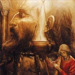

Бран Благословенний, в валлійської міфології, мабуть, бог потойбічного світу, син бога морів Лліра, правитель Британії. Бран міг чудесним чином вбрід переходити моря і переносити своє військо на власній спині. Він віддав свою сестру Бранвен заміж за ірландського короля Матолоха, не повідомивши її єдиноутробного брата Ефнізена, після чого ображений Ефнізен під час весільного бенкету, що відбувся в Уельсі, відрізав коням Матолоха губи, вуха і хвости. В результаті між ірландцями та англійцями мало не спалахнула сварка, але Бран зміг запобігти війні, подарувавши Матолоху чарівний котел. Цей чудовий котел з нижнього світу міг повернути людині життя, але не повертав мова.
Повернувшись до Ірландії, Матолох не зміг переконати місцеву знати, що дар Брана є рівноцінною заміною покалічених коней. Тому Бранвен перестали визнавати королевою і послали на кухню, хоча вона встигла принести Матолоху сина і спадкоємця Гверна.
Тоді, дізнавшись про приниження сестри, Бран зібрав велике військо і відплив до Ірландії. У вирішальній битві британці вбили всіх до єдиного ірландців, але і від їх війська залишилося лише сім чоловік. Бран загинув від отруєної стріли. На смертному одрі він наказав соратникам відрізати йому голову, яка по дорозі додому продовжувала їсти й розмовляти. У більш пізньому доповненні до міфу говориться, що голова Брана Благословенного була доставлена ??в Лондон і похована обличчям до Європи, сприяючи відображенню чужоземних набігів. Цілком ймовірно, що слово "голова" було у валлійців одним з позначень владики потойбічного світу.